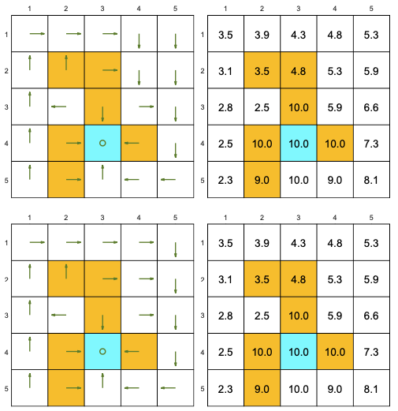

import numpy as np
P = np.array(
[
[1., 0., 0., 0.],
[0., 0., 1., 0.],
[1., 0., 0., 0.],
[0., 1., 0., 0.],
[1., 0., 0., 0.],
[0., 1., 0., 0.],
[0., 0., 0., 1.],
[1., 0., 0., 0.],
[0., 1., 0., 0.],
[0., 1., 0., 0.],
[1., 0., 0., 0.],
[0., 0., 1., 0.],
[0., 0., 1., 0.],
[0., 0., 0., 1.],
[0., 0., 1., 0.],
[0., 1., 0., 0.],
[0., 0., 0., 1.],
[0., 0., 1., 0.],
[0., 0., 0., 1.],
[0., 0., 0., 1.]
]
)Reinforcement Learning and LLM-based Agents
Artificial Intelligence
Reinforcement Learning
LLM
Leveraging Reinforcement Learning and LLMs for building smart, adaptive agents

Introduction
This presentation follows (Zhao 2025).
Reinforcement Learning
- An agent learns to optimize a specified target through trial and error interactions with the environment
- Traditional RL methods struggle with high-dimensional state spaces and complex environments
- Integration of deep learning techniques with RL has led to significant breakthroughs
Large Language Models
- LLMs typically refer to the Transformer-based language models containing hundreds of billions of parameters
- They tend to exhibit emergent abilities that are not present in small models
- In-context learning
- Task-related texts are included in the prompts as context information
- Instruction following
- Diverse task-specific datasets formatted with natural language descriptions
- Step-by-step reasoning
- Chain of Thought
- Tree of Thought
- Graph of Thought
- In-context learning
LLM-enhanced Reinforcement Learning
- Methods that utilize the high-level cognitive capabilities of pre-trained LLM models to assist the RL paradigm
- Taxonomy
- Information processor
- Feature representations extraction
- Information translation to DSL
- Reward designer
- Implicit
- Explicit
- Decision-maker
- Action making
- Action guiding
- Generator
- World model simulator
- Policy interpreter
- Information processor
Introduction to Markov Decision Process
Description
A Markov Decision Process is a mathematical framework used to describe decision-making in situations where outcomes are partly random and partly controlled by an agent.
At each time step, the agent:
- Observes the current state of the environment
- Takes an action, which may lead to a transition to a new state
- Receives a reward based on the action taken and the resulting state
The goal of the agent is to maximize the cumulative reward over time by choosing the best possible actions based on the current state.
Autonomous driving
- State space: \(\mathscr{S} = \left\{ (\text{position}, \text{speed}, \text{lane}, \text{proximity to vehicles}, \text{traffic signals})_1, \dots \right\}\)
- Action space: \(\mathscr{A} = \{ \text{accelerate}, \text{brake}, \text{left}, \text{right}, \text{stay} \}\)
- Reward space: \(\mathscr{R} = \{ \text{+1 for safe driving}, \text{-10 for collision}, \text{+5 for reaching the goal} \}\)
- Model: The dynamics describe the effects of the vehicle’s actions on its next state, such as how acceleration changes speed and position.
Healthcare treatment planning
- State Space: \(\mathscr{S} = \left\{ \big(\text{disease state}, \text{treatment response}, \text{vital signs}, \text{age} \big)_1, \dots \right\}\)
- Action Space: \(\mathscr{A} = \{ \text{drug A}, \text{drug B}, \text{surgery}, \text{no treatment} \}\)
- Reward Space: \(\mathscr{R} = \{ \text{+10 for recovery}, \text{-5 for side effects}, \text{-10 for relapse} \}\)
- Model: The dynamics describe how treatments affect the patient’s health, with probabilistic transitions between health states based on treatment and health conditions.
Probability Theory
Random experiment
A Random experiment is a process that produces an unpredictable outcome.
Example
A rolling a fair die.
Probability space
A probability space \((S, F, P)\) is defined as follows:
- Sample space \(S\)
- Set of possible outcomes
- Sigma-algebra \(F\)
- \(A \in F \Rightarrow A^c \in F\)
- \(\{A_i\}_{i=1}^{\infty} \subseteq F \Rightarrow \bigcup_{i=1}^{\infty} A_i \in F\)
- Probability measure \(P\)
- \(P: F \rightarrow \mathbb{R}\)
- Non-negativity \(P(A) \geq 0\) for all \(A \in F\)
- Normalization \(P(S) = 1\)
- Countable additivity \(P\left(\bigcup_{i=1}^{\infty} A_i\right) = \sum_{i=1}^{\infty} P(A_i)\), \(A_i\) disjoint
- \(P: F \rightarrow \mathbb{R}\)
Example
- Sample space \(S\)
- \(S = \{1, 2, 3, 4, 5, 6\}\)
- Sigma-algebra \(F\)
- \(F = \{\emptyset, \{1\}, \{2\}, \dots, S\}\)
- Probability measure \(P\)
- \(P(\{i\}) = \frac{1}{6}\) for each \(i \in S\)
Random variable
A random variable \(X\) is a function \(X: S \to \mathbb{R}\) such that \(\forall x \in \mathbb{R}\):
\[X^{-1}((-\infty, x]) \in F\]
Example
- \(X(s) = s\)
- \(Y(s) = \begin{cases} 1, & \text{if } s \text{ is even} \\ 0, & \text{if } s \text{ is odd} \end{cases}\)
- \(Z(s) = \begin{cases} 1, & \text{if } s \leq 3 \\ 0, & \text{if } s > 3 \end{cases}\)
PMF
The PMF of a discrete random variable \(X\) is a function \(p_X: \mathbb{R} \to [0, 1]\) such that:
\[p_X(x) = P(X = x)\]
Example
- \(p_X(x) = \frac{1}{6}\) for \(x = 1, 2, 3, 4, 5, 6\)
- \(p_Y(0) = p_Y(1) = \frac{3}{6} = 0.5\)
- \(p_Z(0) = p_Z(1) = \frac{3}{6} = 0.5\)
Joint PMF
The joint PMF of two discrete random variables \(X\) and \(Y\) is defined as follows:
\[p_{X,Y}(x, y) = P(X = x, Y = y)\]
Example
- \(p_{X,Y}(x, y) =\begin{cases} \frac{1}{6}, & \text{if } (x, y) \in \{(1, 0), (2, 1), (3, 0), (4, 1), (5, 0), (6, 1)\} \\ 0, & \text{otherwise} \end{cases}\)
Conditional PMF
The conditional PMF of two discrete random variables \(X\) and \(Y\) is defined as follows:
\[p_{Y|X}(y | x) = \frac{P_{X,Y}(x, y)}{P_X(x)}\]
Example
- \(p_{Y|X}(y | x=2) = \begin{cases} 1, & \text{if } y = 1 \\ 0, & \text{if } y = 0 \end{cases}\)
Independence
Two random variables \(X\) and \(Y\) are independent when for all \(x, y\) the following condition holds:
\[p_{X,Y}(x, y) = P_X(x)P_Y(y)\]
Example
- \(p_{X,Y}(x, y) \neq p_X(x)p_Y(y)\) and \(X\), \(Y\) are not independent
Conditional independence
Two random variables \(X\) and \(Y\) are conditionally independent given the random variable \(Z\) when for all \(x, y, z\) the following condition holds:
\[p_{Y|X, Z}(y | x, z) = P_{Y|Z}(y | z)\]
Example
- \(p_{Y|X,Z}(y | x, z) = p_{Y|X}(y | x) = \begin{cases} 1, & \text{if } x \text{ is even and } y = 1 \\ 1, & \text{if } x \text{ is odd and } y = 0 \\ 0, & \text{otherwise} \end{cases}\)
Joint PMF law of total probability
The joint PMF of two random variables \(X\) and \(Y\) satisfies the following relation:
\[p_X(x) = \sum_y p_{X, Y}(x, y)\]
Example
- \(\sum_y p_{X, Y}(x, y) = p_{X, Y}(x, 0) + p_{X, Y}(x, 1) = p_X(x)\)
- \(\sum_x p_{X, Y}(x, y) = p_{X, Y}(1, y) + p_{X, Y}(2, y) + \cdots = p_Y(y)\)
Conditional PMF chain rule
The chain rule of conditional PMFs is the following:
\[p_{X|Y}(x \mid y)=\sum_z p_{X|Z,Y}(x \mid z, y) p_{Z|Y}(z \mid y)\]
Example
- \(p_{X|Z,Y}(x \mid z, y) =\begin{cases} \frac{1}{2}, & \text{if } x = 4 \text{ or } 6, z = 1, y = 1 \\ 1, & \text{if } x = 2, z = 0, y = 1 \\ 1, & \text{if } x = 5, z = 1, y = 0 \\ \frac{1}{2}, & \text{if } x = 1 \text{ or } 3, z = 0, y = 0 \\ 0, & \text{otherwise} \end{cases}\)
- \(p_{Z|Y}(z \mid y) = \begin{cases} \frac{2}{3}, & \text{if } z = 1 \text{ and } y = 1 \\ \frac{1}{3}, & \text{if } z = 0 \text{ and } y = 1 \\ \frac{1}{3}, & \text{if } z = 1 \text{ and } y = 0 \\ \frac{2}{3}, & \text{if } z = 0 \text{ and } y = 0 \\0, & \text{otherwise} \end{cases}\)
- \(p_{X|Y}(x \mid y) = \begin{cases} \frac{1}{3}, & \text{if } x \text{ is even and } y = 1 \\ \frac{1}{3}, & \text{if } x \text{ is odd and } y = 0 \\ 0, & \text{otherwise} \end{cases}\)
Expectation
The expectation of a discrete random variable \(X\) is defined as follows:
\[\mathbb{E}[X]=\sum_x p_X(x) x\]
Example
- \(\mathbb{E}[X]= (1 + 2 + 3 + 4 + 5 + 6) \cdot \frac{1}{6} = 3.5\)
Conditional expectation
The conditional expectation of two discrete random variables \(X\) and \(Y\) is defined as follows:
\[\mathbb{E}[X \mid Y=y]=\sum_x x p_{X|Y}(x \mid y)\]
Example
- \(\mathbb{E}[X \mid Y=1] = \sum_x x p_{X|Y}(x \mid y=1) = (2 + 4 + 6) \cdot \frac{1}{3} = 4\)
Law of total expectation
The law of total expectation of two discrete random variables \(X\) and \(Y\) is the following:
\[\mathbb{E}[X]=\sum_y \mathbb{E}[X \mid Y=y] p_Y(y)\]
Example
- \(\mathbb{E}[X]= \mathbb{E}[X \mid Y=1] p_Y(1) + \mathbb{E}[X \mid Y=0] p_Y(0) = \frac{4 + 3}{2} = 3.5\)
Variance
The variance of a random variable \(X\) is defined as follows:
\[\operatorname{var}(X)=\mathbb{E}\left[(X-\bar{X})^2\right] = \mathbb{E}[X^2] - (\mathbb{E}[X])^2\]
Example
- \(\operatorname{var}(X) = \frac{1^2 + \cdots + 6^2}{6} - 3.5^2 \approx 2.92\)
Covariance
The covariance of two random variables \(X\) and \(Y\) is defined as follows:
\[\operatorname{cov}(X, Y)=\mathbb{E}[(X-\bar{X})(Y-\bar{Y})] = \mathbb{E}[XY] - \mathbb{E}[X] \mathbb{E}[Y]\]
Example
- \(\operatorname{cov}(X, Y)=\sum_{x,y} p_{X, Y}(x, y) xy - \mathbb{E}[X] \mathbb{E}[Y] = 0.25\)
Covariance matrix
The covariance of a random vector \(\vec{X}\) is defined as follows:
\[\Sigma=\mathbb{E} \left[(\vec{X}- \bar{\vec{X}})(\vec{X}-\bar{\vec{X}})^T\right] \in \mathbb{R}^{n \times n}\]
In components form:
\[[\Sigma]_{i j} = \operatorname{cov}\left(X_i, X_j\right)\]
Example
- \(\Sigma = \begin{pmatrix} \text{Var}(X) & \text{Cov}(X, Y) & \text{Cov}(X, Z) \\ \text{Cov}(Y, X) & \text{Var}(Y) & \text{Cov}(Y, Z) \\ \text{Cov}(Z, X) & \text{Cov}(Z, Y) & \text{Var}(Z) \end{pmatrix} = \begin{pmatrix} 2.92 & 0.25 & -0.75 \\ 0.25 & 0.25 & \frac{1}{12} \\ -0.75 & \frac{1}{12} & 0.25 \end{pmatrix}\)
Basics of Markov Decision Process

Definition
- Sets
- State space: \(\mathscr{S}=\left\{s_1, s_2, \ldots \right\}\)
- Action space: \(\mathscr{A}(s)=\left\{a_1, a_2, \ldots, \right\}\)
- Reward space: \(\mathscr{R}(s, a)=\left\{r_1, r_2, \ldots \right\}\)
- Model
- State transition: \(p(s' \mid s, a)\)
- Reward: \(p(r \mid s, a)\)
- Policy
- \(\pi(a \mid s) = p(a \mid s)\)
- Markov property
- \(p\left(s_{t+1} \mid s_t, a_t, s_{t-1}, \ldots \right)=p\left(s_{t+1} \mid s_t, a_t\right)\)
- \(p\left(r_{t+1} \mid s_t, a_t, s_{t-1}, \ldots \right)=p\left(r_{t+1} \mid s_t, a_t\right)\)
Example
- Sets
- State space: \(\mathscr{S} = \{ s_1, s_2, s_3, s_4 \}\)
- Action space: \(\mathscr{A} = \{ \uparrow, \downarrow, \leftarrow, \rightarrow, \bigcirc \}\)
- Reward space: \(\mathscr{R} = \{ -1, +1, 0 \}\)
- Model
- State transition: \(p(s' \mid s, a) = 0 \text{ or } 1\)
- Reward: \(p(r \mid s, a) = 0 \text{ or } 1\)
- Policy
- \(\pi(a \mid s) = 0 \text{ or } 1\)
- Markov property
- \(p\left(s_{t+1} \mid s_t, a_t, s_{t-1}, \ldots \right)=p\left(s_{t+1} \mid s_t, a_t\right)\)
- \(p\left(r_{t+1} \mid s_t, a_t, s_{t-1}, \ldots \right)=p\left(r_{t+1} \mid s_t, a_t\right)\)
State-action-reward trajectory
The state-action-reward trajectory is defined as follows:
\[\ldots S_t, R_{t} \overset{A_t} \rightarrow S_{t+1}, R_{t+1} \overset{A_{t+1}} \rightarrow S_{t+2}, R_{t+2} \ldots\]
Example
- \(\ldots s_1, 0 \overset{\downarrow} \rightarrow s_3, 0 \overset{\rightarrow} \rightarrow s_4, 1 \overset{\bigcirc} \rightarrow s_4, 1 \overset{\bigcirc} \rightarrow \ldots\)
Discounted return
The discounted return is defined as follows:
\[G_t = R_{t+1} + \gamma \cdot R_{t+2} + \gamma^2 \cdot R_{t+3} + \cdots\]
Example
- \(G_t = 0 + \gamma \cdot 1 + \gamma^2 \cdot 1 + \cdots = \frac{\gamma}{1-\gamma}\)
Terminal state
- Exists \(s_{T}\) that resets the next state to a starting state
- Episodic task: There are terminal states
- Continuing task: There are no terminal states
Example
State Value and Bellman Equation
State value
The state value is defined as follows:
\[v_\pi(s) \doteq \mathbb{E}\left[G_t \mid S_t=s\right]\]
Example
- \(v_\pi(s_1) = -0.5 + \frac{\gamma}{1-\gamma}\)
- \(v_\pi(s_2) = \frac{1}{1-\gamma}\)
- \(v_\pi(s_3) = \frac{1}{1-\gamma}\)
- \(v_\pi(s_4) = \frac{1}{1-\gamma}\)
Bellman equation
The Bellman equation of the state values is the following:
\[v_\pi(s) = \sum_{a \in \mathscr{A}} \pi(a \mid s)\left[\sum_{r \in \mathscr{R}} p(r \mid s, a) r+\gamma \sum_{s^{\prime} \in \mathscr{S}} p\left(s^{\prime} \mid s, a\right) v_\pi\left(s^{\prime}\right)\right]\]
Example
- \(v_\pi(s_1) = -0.5 + 0.5 \gamma (v_\pi(s_2) + v_\pi(s_3))\)
- \(v_\pi(s_2) = 1 + \gamma v_\pi(s_4)\)
- \(v_\pi(s_3) = 1 + \gamma v_\pi(s_4)\)
- \(v_\pi(s_4) = 1 + \gamma v_\pi(s_4)\)
Bellman equation equivalent forms
The Bellman equation can be written as follows:
\[v_\pi(s)=\sum_{a \in \mathscr{A}} \pi(a \mid s) \sum_{s^{\prime} \in \mathscr{S}} \sum_{r \in \mathscr{R}} p\left(s^{\prime}, r \mid s, a\right)\left[r+\gamma v_\pi\left(s^{\prime}\right)\right]\]
If the reward depends only on the next state the Bellman equation can be written as follows:
\[v_\pi(s)=\sum_{a \in \mathscr{A}} \pi(a \mid s) \sum_{s^{\prime} \in \mathscr{S}} p\left(s^{\prime} \mid s, a\right)\left[r\left(s^{\prime}\right)+\gamma v_\pi\left(s^{\prime}\right)\right]\]
Bellman equation matrix-vector form
The Bellman equation in matrix vector form is written as follows:
\[v_\pi=r_\pi+\gamma P_\pi v_\pi\]
where
\[\left[r_\pi\right]_s \doteq \sum_{a \in \mathscr{A}} \pi(a \mid s) \sum_{r \in \mathscr{R}} p(r \mid s, a) r\]
\[\left[P_\pi\right]_{s s^{\prime}} \doteq \sum_{a \in \mathscr{A}} \pi(a \mid s) p\left(s^{\prime} \mid s, a\right)\]
The state transition matrix \(P\) has the following properties:
\[P_\pi \geq 0\]
\[P_\pi \mathbf{1}=\mathbf{1}\]
\[\exists (I-\gamma P_\pi)^{-1}\]
\[\left(I-\gamma P_\pi\right)^{-1} \geq I\]
\[\left(I-\gamma P_\pi\right)^{-1} r \geq , r \geq 0\]
\[\left(I-\gamma P_\pi\right)^{-1} r_1 \geq\left(I-\gamma P_\pi\right)^{-1} r_2, r_1 \geq r_2\]
Example
- \(r_\pi = \left[\begin{array}{c}0.5(0)+0.5(-1) \\ 1 \\ 1 \\ 1\end{array}\right]\)
- \(P_\pi = \left[\begin{array}{cccc}0 & 0.5 & 0.5 & 0 \\ 0 & 0 & 0 & 1 \\ 0 & 0 & 0 & 1 \\ 0 & 0 & 0 & 1\end{array}\right]\)
Policies and state values
Example
The following “good” policies are different but they have the same state values:

Example
The following “bad” policies have lower state values:
Bellman equation closed-form solution
\[v_\pi=\left(I-\gamma P_\pi\right)^{-1} r_\pi\]
Bellman equation iterative solution
\[v_{k+1}=r_\pi+\gamma P_\pi v_k, \quad k=0,1,2, \ldots\]
State transition probability
\[[P]_{(s, a), s^{\prime}}=p\left(s^{\prime} \mid s, a\right)\]
Reward probability
\[[R]_{(s, a), r}=p\left(r \mid s, a\right)\]
R = np.array(
[
[1., 0., 0.],
[0., 0., 1.],
[1., 0., 0.],
[1., 0., 0.],
[0., 0., 1.],
[1., 0., 0.],
[0., 1., 0.],
[0., 0., 1.],
[1., 0., 0.],
[1., 0., 0.],
[0., 0., 1.],
[1., 0., 0.],
[1., 0., 0.],
[0., 1., 0.],
[0., 0., 1.],
[1., 0., 0.],
[1., 0., 0.],
[0., 0., 1.],
[1., 0., 0.],
[0., 1., 0.]
]
)Policy probability
\[[\Pi]_{a, s} = p(a \mid s)\]
Pi = np.array([
[0.0, 0.0, 0.0, 0.0],
[0.5, 1.0, 0.0, 0.0],
[0.0, 0.0, 0.0, 0.0],
[0.5, 0.0, 1.0, 0.0],
[0.0, 0.0, 0.0, 1.0]
])Expected reward under policy
\[\left[r_\pi\right]_s = \sum_{a \in \mathscr{A}} \pi(a \mid s) \sum_{r \in \mathscr{R}} p(r \mid s, a) r\]
\[\left[r_\pi\right]_s = \sum_{a \in \mathscr{A}} \big( R \cdot \left[\begin{array}{c}-1 & 1 & 0 \end{array}\right]^T \big)_{s, a} \cdot [\Pi]_{a, s}\]
r_space = np.array([-1, 1, 0])
r_p = np.diagonal(
np.matmul(
np.dot(R, r_space).reshape(4, 5),
Pi
)
)
r_parray([-0.5, 1. , 1. , 1. ])State transition probability under policy
\[\left[P_\pi\right]_{s s^{\prime}} = \sum_{a \in \mathscr{A}} \pi(a \mid s) p\left(s^{\prime} \mid s, a\right)\]
\[\left[P_\pi\right]_{s s^{\prime}} = \sum_{a \in \mathscr{A}} [\Pi^T]_{s, a} [P]_{(s, a), s^{\prime}}\]
P_p = np.diagonal(
np.matmul(
P.T.reshape(4,4,5),
Pi
).T
).T
P_parray([[0. , 0.5, 0.5, 0. ],
[0. , 0. , 0. , 1. ],
[0. , 0. , 0. , 1. ],
[0. , 0. , 0. , 1. ]])Implementing Bellman equation closed-form solution
\[v_\pi=\left(I-\gamma P_\pi\right)^{-1} r_\pi\]
gamma = 0.9
I = np.identity(r_p.size)
v_cfs = np.dot(np.linalg.inv(I - gamma * P_p), r_p)
v_cfsarray([ 8.5, 10. , 10. , 10. ])Implementing Bellman equation iterative solution
\[v_{k+1}=r_\pi+\gamma P_\pi v_k, \quad k=0,1,2, \ldots\]
tol = 1e-5
v_is = np.zeros_like(r_p)
while True:
v_is_current = v_is
v_is = r_p + gamma * np.dot(P_p, v_is)
diff = np.abs(v_is - v_is_current)
if np.any(diff < tol):
break
v_isarray([8.49991665, 9.99991665, 9.99991665, 9.99991665])Action Value and Bellman Equation
Action value
The action value is defined as follows:
\[q_\pi(s, a) \doteq \mathbb{E}\left[G_t \mid S_t=s, A_t=a\right]\]
Example
- \(q_\pi(s_1, \rightarrow) = -1 + \gamma \frac{1}{1-\gamma}\)
- \(q_\pi(s_1, \downarrow) = \gamma \frac{1}{1-\gamma}\)
- \(q_\pi(s_1, \leftarrow) = -1 + \gamma (-0.5 + \frac{\gamma}{1-\gamma})\)
- \(q_\pi(s_1, \uparrow) = -1 + \gamma (-0.5 + \frac{\gamma}{1-\gamma})\)
- \(q_\pi(s_1, \bigcirc) = \gamma (-0.5 + \frac{\gamma}{1-\gamma})\)
- \(q_\pi(s_2, \rightarrow) = -1 + \gamma \frac{1}{1-\gamma}\)
- \(q_\pi(s_2, \downarrow) = 1 + -1 + \gamma \frac{1}{1-\gamma}\)
- \(q_\pi(s_2, \leftarrow) = \gamma (-0.5 + \frac{\gamma}{1-\gamma})\)
- \(q_\pi(s_2, \uparrow) = -1 + \gamma \frac{1}{1-\gamma}\)
- \(q_\pi(s_2, \bigcirc) = -1 + \gamma \frac{1}{1-\gamma}\)
- \(q_\pi(s_3, \rightarrow) = 1 + \gamma \frac{1}{1-\gamma}\)
- \(q_\pi(s_3, \downarrow) = -1 + \gamma \frac{1}{1-\gamma}\)
- \(q_\pi(s_3, \leftarrow) = -1 + \gamma \frac{1}{1-\gamma}\)
- \(q_\pi(s_3, \uparrow) = 1 + \gamma (-0.5 + \frac{\gamma}{1-\gamma})\)
- \(q_\pi(s_3, \bigcirc) = \gamma \frac{1}{1-\gamma}\)
- \(q_\pi(s_4, \rightarrow) = -1 + \gamma \frac{1}{1-\gamma}\)
- \(q_\pi(s_4, \downarrow) = -1 + \gamma \frac{1}{1-\gamma}\)
- \(q_\pi(s_4, \leftarrow) = \gamma \frac{1}{1-\gamma}\)
- \(q_\pi(s_4, \uparrow) = -1 + \gamma \frac{1}{1-\gamma}\)
- \(q_\pi(s_4, \bigcirc) = 1 + \gamma \frac{1}{1-\gamma}\)
Action value to state value
The following formula provides the conversion from action to state value:
\[v_\pi(s)=\sum_{a \in \mathscr{A}} \pi(a \mid s) q_\pi(s, a)\]
Example
- \(v_\pi(s_1) = 0.5 + 0.5 \gamma \frac{1}{1-\gamma} = -0.5 + \frac{\gamma}{1-\gamma}\)
State value to action value
The following formula provides the conversion from state to action value:
- \(q_\pi(s, a)=\sum_{r \in \mathscr{R}} p(r \mid s, a) r+\gamma \sum_{s^{\prime} \in \mathscr{S}} p\left(s^{\prime} \mid s, a\right) v_\pi\left(s^{\prime}\right)\)
Example
- \(q_\pi(s_1, \rightarrow) = 1(-1) + \gamma v_\pi(s_2) = -1 + \gamma \frac{1}{1-\gamma}\)
Bellman equations
The Bellman equation of the action values is the following:
\[q_\pi(s, a)=\sum_{r \in \mathscr{R}} p(r \mid s, a) r+\gamma \sum_{s^{\prime} \in \mathscr{S}} p\left(s^{\prime} \mid s, a\right) \sum_{a^{\prime} \in \mathscr{A}\left(s^{\prime}\right)} \pi\left(a^{\prime} \mid s^{\prime}\right) q_\pi\left(s^{\prime}, a^{\prime}\right)\]
Example
- \(q_\pi(s_1, \rightarrow) = -1 + \gamma q_\pi(s_2, \downarrow)\)
- \(q_\pi(s_1, \downarrow) = \gamma q_\pi(s_3, \rightarrow)\)
- \(q_\pi(s_1, \leftarrow) = -1 + \gamma (q_\pi(s_1, \rightarrow) + q_\pi(s_1, \downarrow))\)
- \(q_\pi(s_1, \uparrow) = -1 + \gamma (q_\pi(s_1, \rightarrow) + q_\pi(s_1, \downarrow))\)
- \(q_\pi(s_1, \bigcirc) = \gamma (q_\pi(s_1, \rightarrow) + q_\pi(s_1, \downarrow))\)
- \(q_\pi(s_2, \rightarrow) = -1 + \gamma q_\pi(s_2, \downarrow)\)
- \(q_\pi(s_2, \downarrow) = 1 + + \gamma q_\pi(s_4, \bigcirc)\)
- \(q_\pi(s_2, \leftarrow) = \gamma (q_\pi(s_1, \rightarrow) + q_\pi(s_4, \downarrow))\)
- \(q_\pi(s_2, \uparrow) = -1 + \gamma q_\pi(s_2, \downarrow)\)
- \(q_\pi(s_2, \bigcirc) = -1 + \gamma q_\pi(s_2, \downarrow)\)
- \(q_\pi(s_3, \rightarrow) = 1 + \gamma q_\pi(s_4, \bigcirc)\)
- \(q_\pi(s_3, \downarrow) = -1 + \gamma q_\pi(s_3, \rightarrow)\)
- \(q_\pi(s_3, \leftarrow) = -1 + \gamma q_\pi(s_3, \rightarrow)\)
- \(q_\pi(s_3, \uparrow) = 1 + \gamma (q_\pi(s_1, \rightarrow) + q_\pi(s_1, \downarrow))\)
- \(q_\pi(s_3, \bigcirc) = \gamma q_\pi(s_3, \rightarrow)\)
- \(q_\pi(s_4, \rightarrow) = -1 + \gamma q_\pi(s_4, \bigcirc)\)
- \(q_\pi(s_4, \downarrow) = -1 + \gamma q_\pi(s_4, \bigcirc)\)
- \(q_\pi(s_4, \leftarrow) = \gamma q_\pi(s_3, \rightarrow)\)
- \(q_\pi(s_4, \uparrow) = -1 + \gamma q_\pi(s_2, \downarrow)\)
- \(q_\pi(s_4, \bigcirc) = 1 + \gamma q_\pi(s_4, \bigcirc)\)
Bellman equation matrix-vector form
The Bellman equation in matrix vector form is written as follows:
\[q_\pi=\tilde{r}+\gamma P \Pi q_\pi\]
where
\[\left[q_\pi\right]_{(s, a)}=q_\pi(s, a)\]
\[[\tilde{r}]_{(s, a)}=\sum_{r \in \mathscr{R}} p(r \mid s, a) r\]
\[[P]_{(s, a), s^{\prime}}=p\left(s^{\prime} \mid s, a\right)\]
\[\Pi_{s^{\prime},\left(s^{\prime}, a^{\prime}\right)}=\pi\left(a^{\prime} \mid s^{\prime}\right)\]
Example
- \(\tilde{r} = \left[\begin{array}{c} -1 \\ 0 \\ -1 \\ -1 \\ 0 \\ \vdots\end{array}\right]\)
- \(P = \left[\begin{array}{cccc}1 & 0 & 0 & 0 \\ 0 & 0 & 1 & 0 \\ 1 & 0 & 0 & 0 \\ 0 & 1 & 0 & 0 \\ 1 & 0 & 0 & 0 \\ \vdots & \vdots & \vdots & \vdots \end{array}\right]\)
- \(\Pi = \left[\begin{array}{cccc}0 & 0.5 & 0 & 0.5 & 0 & 0 & 0 & 0 & 0 & 0 &\dots \\ 0 & 0 & 0 & 0 & 0 & 0 & 1 & 0 & 0 & 0 &\dots \\ 0 & 0 & 0 & 0 & 0 & 0 & 0 & 0 & 0 & 0 & \dots \\ 0 & 0 & 0 & 0 & 0 & 0 & 0 & 0 & 0 & 0 & \dots \end{array}\right]\)
References
Zhao, Shiyu. 2025. Mathematical Foundations of Reinforcement Learning. Springer Nature Singapore. https://doi.org/10.1007/978-981-97-3944-8.